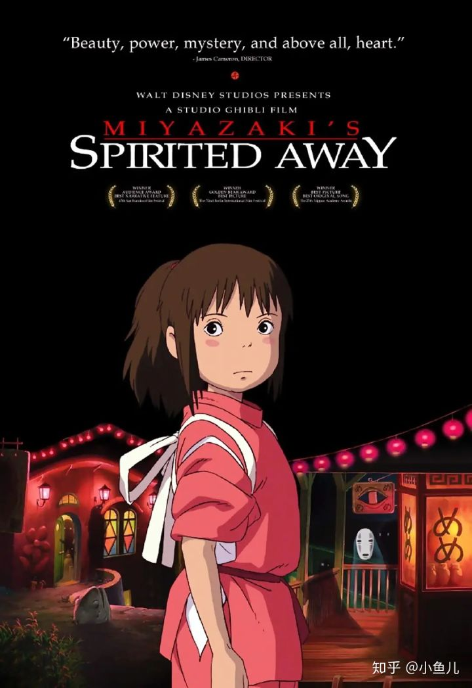

迅速查找：
1.《千与千寻》
2.《疯狂动物城》
3《寻梦环游记》
4《龙猫》
5《飞屋环游记》
6《哈尔的移动城堡》
7《天空之城》
9《你的名字》
《千与千寻》

简介：说的是一个十岁的小女孩千寻，跟着父母从这个城市搬迁到另一个城市，途中所发生的一段奇妙旅程。
《疯狂动物城》

简介：讲述了在一个所有动物和平共处的动物城市，兔子朱迪通过自己努力奋斗完成自己儿时的梦想，成为动物警察的故事。
《寻梦环游记》

简介：讲述了热爱音乐的小男孩米格尔和落魄乐手埃克托在五彩斑斓的神秘世界开启了一段奇妙冒险旅程的故事。
《龙猫》

简介：说的是两姐妹和爸爸一起般到乡下，然后在一颗大树下发现了一只TOTORO，而后发生了很多不可思议而有趣的故事。
《飞屋环游记》

简介：讲述的是卡尔在妻子逝去后做出了一个重大决定，带着屋子一起前往南美，去实现妻子和他共同的梦想的励志故事。
《哈尔的移动城堡》

简介：这个故事说的是善良年轻的苏菲被恶毒的女巫施下魔咒，变成老婆婆，后无意走入镇外的移动城堡，与哈尔共同生活，后发生了一段爱与痛、乐与悲的爱情故事。
《天空之城》

简介：讲述的是在一个无人居住的古老帝国拉比达里蕴藏着巨大的财富，主人公少女希达和少年巴鲁以及海盗、军队、穆斯卡等寻找天空之城拉普达的历险记。
《狮子王》

简介：说的是小狮子辛巴痛失亲人后，努力复国救民，领会了责任真谛的故事。
《你的名字》

简介：讲述了一名少年和一名少女在梦中相遇，而后寻找彼此的的奇幻爱情故事。